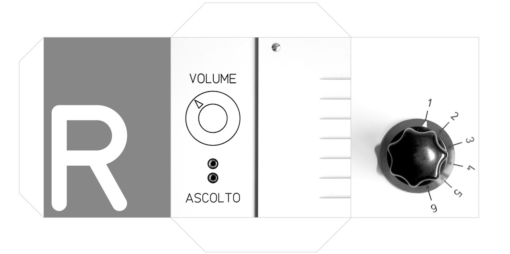

Promos
Commercial Videos. Once in a while

Dream
This promo is about DREAM, an EU founded project aimed at preserving, reconstructing, and exhibiting the devices and the music of the Studio di Fonologia Musicale di Milano della Rai (SdF hereafter).
During the project, part of the equipment of the Studio (oscillators and non-linear filters) has been virtually reconstructed and became part of the permanent exhibit at the Museum of Musical Instruments in Milan.
Cult and Pulp
Tv promo for a music Shop in Cittadella, PD (Italy)